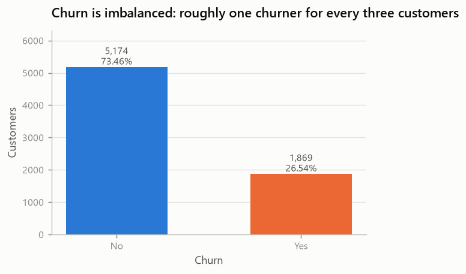
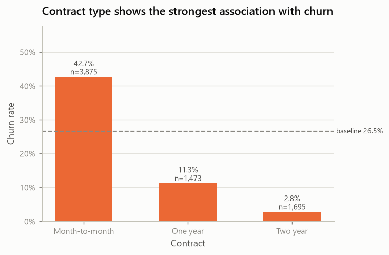
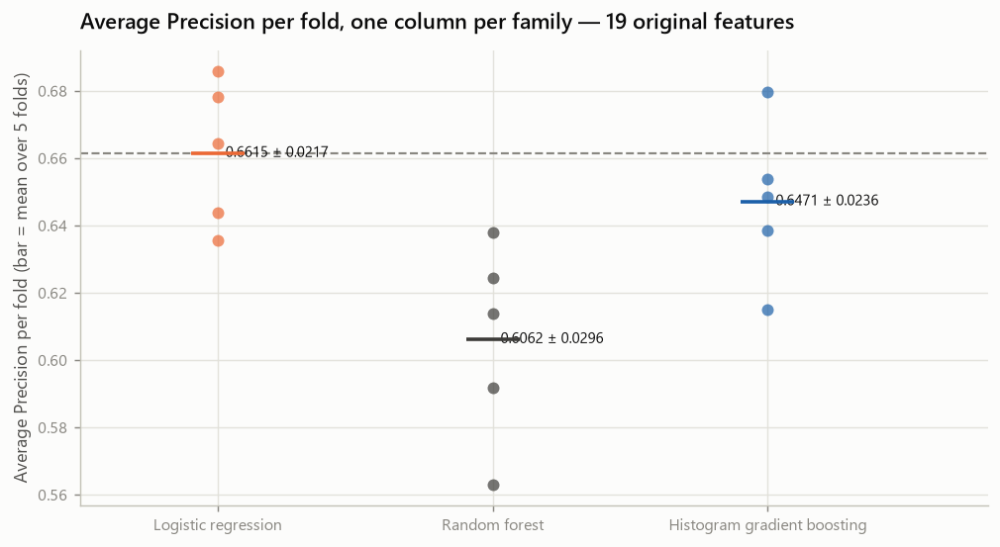
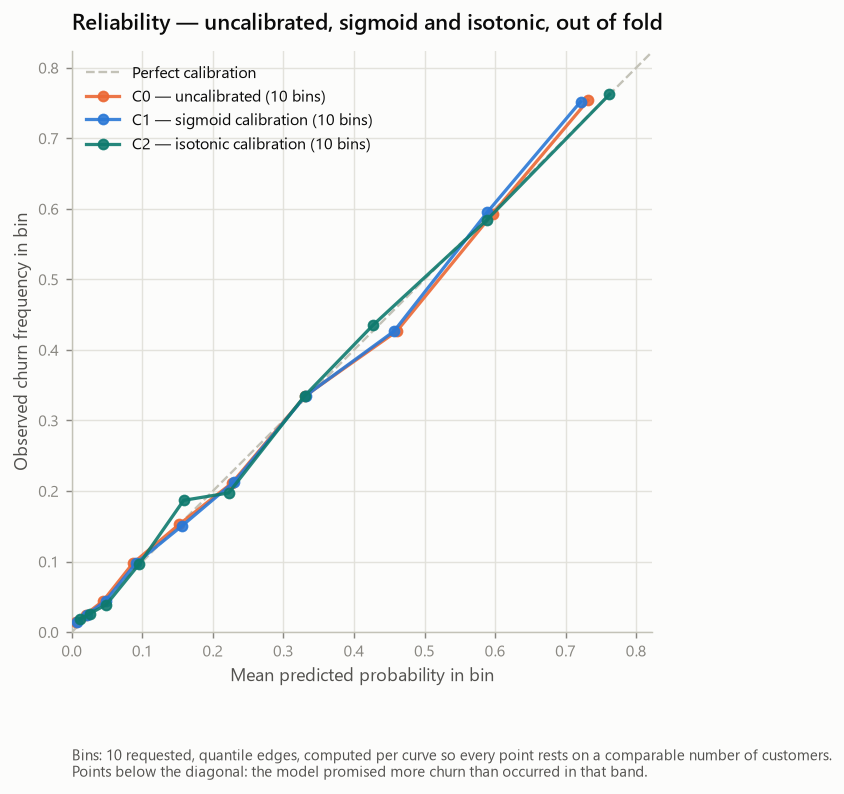
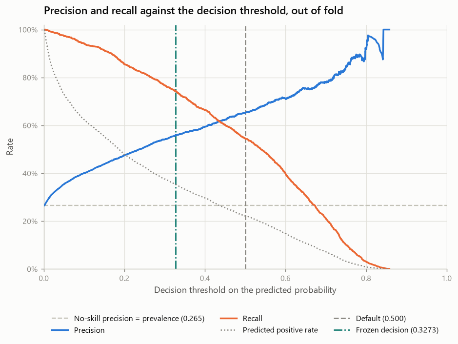
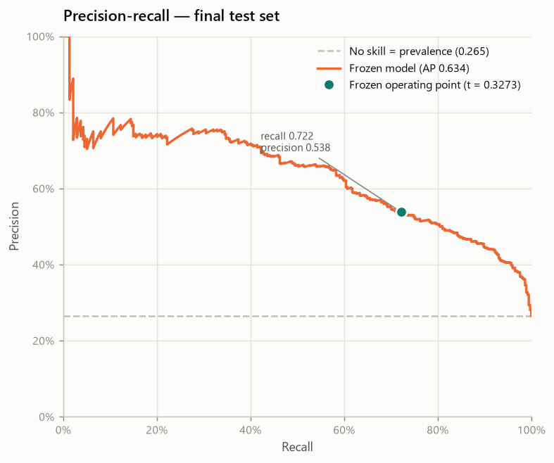
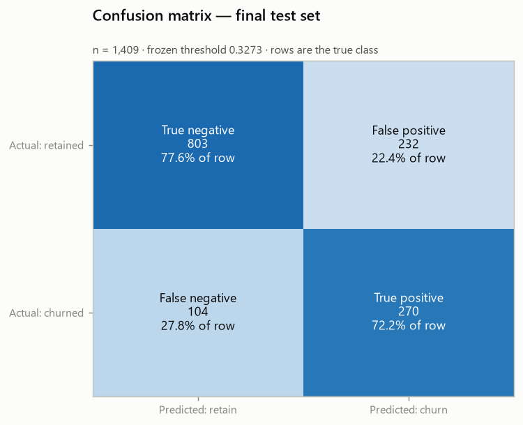
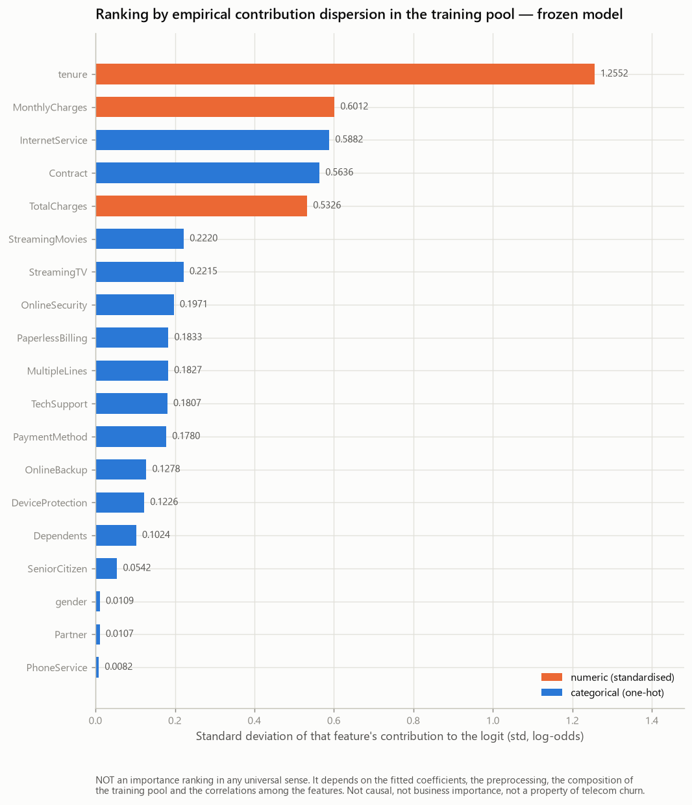

AVISO DE ESTADO — DOCUMENTO EM RASCUNHO (DRAFT). Este relatório contém campos de capa e links de entrega que dependem de ação humana externa e ainda não foram preenchidos. Enquanto os marcadores
[[EXTERNAL_INPUT_REQUIRED: …]]existirem neste arquivo, nenhuma renderização dele pode ser tratada como versão final de entrega.
Instituição: [[EXTERNAL_INPUT_REQUIRED: nome da instituição de ensino]]
Curso / Programa: [[EXTERNAL_INPUT_REQUIRED: nome do curso de pós-graduação]]
Disciplina: [[EXTERNAL_INPUT_REQUIRED: nome da disciplina]]
Professor(a) responsável: [[EXTERNAL_INPUT_REQUIRED: nome do(a) docente]]
Autor: Vinicius Gomes
Cidade: [[EXTERNAL_INPUT_REQUIRED: cidade]]
Data de entrega: [[EXTERNAL_INPUT_REQUIRED: data da entrega]]
Nota sobre os campos pendentes. Os marcadores acima não são omissões de redação. Nenhum metadado acadêmico — instituição, curso, disciplina, docente, cidade ou data — consta em qualquer arquivo deste repositório, e este documento não inventa informação que não possa ser verificada. O único campo comprovado é a autoria, registrada em
pyproject.tomle no histórico de commits.
Este trabalho constrói um sistema de predição de churn para uma operadora de telecomunicações. O objetivo declarado desde o início não foi treinar um classificador, e sim produzir algo que resista a inspeção:
um sistema reprodutível de predição de churn, validado sob um protocolo que protege o conjunto de teste, com limiar de decisão analisado, previsões explicadas exatamente, inferência empacotada e monitoramento desenhado.
A diferença entre esses dois objetivos aparece em cada decisão do relatório. Um notebook que atinge boa acurácia responde "o modelo acertou?". Um sistema de engenharia de ML precisa responder também "como sei que essa medida vale?", "o que o modelo usou para decidir?" e "como eu saberia que ele parou de funcionar?".
O trabalho foi conduzido em quinze fases, cada uma encerrada em commit próprio, com resultados gravados em artefatos determinísticos e verificáveis. Todo número deste relatório provém de um experimento efetivamente executado pelo código do repositório e pode ser rastreado até um arquivo versionado — o mapeamento está na seção Rastreabilidade.
Afirma: que o sistema identifica clientes em risco com qualidade de ordenação substancialmente superior ao acaso, sob um protocolo experimental que não foi contaminado pelo conjunto de teste.
Não afirma: que o sistema reduz churn. Essa é uma pergunta causal, e responder a ela exigiria um experimento de intervenção — campanha aleatorizada, grupo de controle, medição de uplift — que não foi conduzido. Predizer quem sairá e reduzir quantos saem são resultados diferentes, e este trabalho mede apenas o primeiro.
Em telecomunicações a receita é recorrente: ela não vem da venda, vem da permanência. A aquisição de um cliente novo custa consistentemente mais do que a retenção de um existente, o que torna a pergunta operacional concreta e urgente:
quais clientes estão em risco de sair enquanto ainda é possível agir?
Uma lista de clientes perdidos tem valor analítico. Uma lista de clientes em risco tem valor operacional. O sistema precisa produzir a segunda.
Classificação binária supervisionada.
| Elemento | Definição |
|---|---|
| Classe positiva | Churn = Yes — o cliente encerrou o relacionamento |
| Classe negativa | Churn = No — o cliente permaneceu |
| Saída primária | probabilidade de churn, contínua em [0, 1] |
| Saída secundária | decisão binária, obtida aplicando um limiar justificado ao score |
| Unidade de análise | um cliente |
A saída primária ser a probabilidade, e não a classe, é uma decisão de projeto. Uma operação de retenção não pergunta "quem vai sair?" — ela pergunta "com quem eu falo primeiro, dada a capacidade que tenho?". Priorizar exige ordenar, e ordenar exige um score contínuo. A conversão em decisão binária é uma segunda etapa, separada, analisada na seção Resultados experimentais.
A base é desbalanceada: 26,54 % dos clientes saíram. Um classificador trivial que responde "ninguém sai" para toda a carteira acerta 73,46 % dos casos — e não encontra um único cliente em risco.
Acurácia, isolada, não distingue esse modelo inútil de um modelo útil. O critério primário deste trabalho é, portanto, Average Precision (área sob a curva Precision-Recall), que mede qualidade de ordenação na classe minoritária, com ROC-AUC como métrica secundária. Acurácia é reportada, mas como métrica auxiliar, nunca como manchete.
| Campo | Valor |
|---|---|
| Nome | Telco Customer Churn |
| Origem canônica | Kaggle — blastchar/telco-customer-churn |
| Origem de reprodução pública | repositório GitHub da IBM, acessível por HTTPS sem autenticação |
| Natureza | dado de exemplo publicado pela IBM |
| Arquivo | WA_Fn-UseC_-Telco-Customer-Churn.csv |
SHA-256 da representação canônica do projeto (CRLF) | 88be4b93fbe0cc83421af1c503794c97c342eca914c1576db7c276e61d61358a |
SHA-256 dos bytes servidos pelo mirror público (LF) | 16320c9c1ec72448db59aa0a26a0b95401046bef5d02fd3aeb906448e3055e91 |
| Linhas | 7043 |
| Colunas | 21 |
O arquivo bruto é versionado no repositório e nunca editado à mão. Toda transformação acontece em código, o que torna qualquer resultado reproduzível a partir dos bytes originais.
A página do Kaggle exige autenticação, o que impediria a execução do notebook em um ambiente limpo sem credenciais. O notebook acadêmico usa por isso o repositório público da própria IBM.
O mirror público não entrega os mesmos bytes que o projeto congelou, e o relatório não afirma que entrega. Ele distribui o mesmo dataset com representação LF, enquanto o arquivo congelado no projeto utiliza CRLF. O notebook registra o hash dos bytes baixados e, separadamente, normaliza exclusivamente a representação de quebras de linha antes de comparar com o SHA-256 congelado do projeto.
| Identidade | O que é | Valor |
|---|---|---|
downloaded_bytes_sha256 | os bytes exatamente como servidos pelo mirror; propriedade do mirror, não do projeto | 16320c9c…3055e91 |
canonicalized_dataset_sha256 | o mesmo conteúdo reserializado na forma canônica do projeto | 88be4b93…1d61358a |
Apenas o segundo é comparado com a constante congelada, e é ele que precisa bater.
A regra de canonicalização, por extenso. O fluxo de bytes é dividido em linhas lógicas nos terminadores presentes (CRLF, CR isolado ou LF isolado) e reserializado com CRLF. Nada mais é tocado: sem remoção de espaços, sem reordenação de linhas ou colunas, sem conversão de valores, sem normalização de números, sem alteração de aspas e sem mudança semântica de codificação. A diferença de tamanho é de exatamente 7 044 bytes — um por linha lógica.
Nenhuma diferença de dados está sendo escondida pela transformação. O notebook prova isso: removidos todos os terminadores de linha, os dois fluxos de bytes são idênticos, e a execução aborta se não forem. Uma segunda verificação, independente do hash, confirma 7 043 linhas e as 21 colunas esperadas na ordem esperada — de modo que "normalizar até o hash bater" seja distinguível de massagear outro dataset até que ele passasse na verificação.
Uma linha por cliente. Uma coluna identificadora (customerID, excluída da modelagem por não ser preditor), 19 preditores e a variável-alvo.
| Grupo | Quantidade | Colunas |
|---|---|---|
| Numéricos | 3 | tenure, MonthlyCharges, TotalCharges |
| Categóricos | 16 | demografia, serviços contratados, contrato, faturamento, pagamento |
| Alvo | 1 | Churn ∈ {No, Yes} |
| Classe | Contagem | Proporção |
|---|---|---|
No (permaneceu) | 5 174 | 73,46 % |
Yes (saiu) | 1 869 | 26,54 % |

Razão entre classes de 2,77 : 1. Desbalanceamento moderado — suficiente para inviabilizar a acurácia como critério, insuficiente para exigir reamostragem.
Verificações executadas sobre o arquivo bruto:
| Verificação | Resultado |
|---|---|
| Linhas duplicadas | 0 |
| Identificadores duplicados | 0 |
| Valores nulos declarados | 0 |
| Domínio do alvo | exatamente {No, Yes} |
| Cardinalidade das categóricas | 2 a 4 níveis; nenhuma de alta cardinalidade |
Há um problema real, e ele é instrutivo.
TotalChargesTotalCharges chega tipada como texto, não como número, porque 11 células contêm apenas espaço em branco. Um read_csv ingênuo produz uma coluna de objetos e qualquer operação numérica falha silenciosamente ou explode.
Essas 11 linhas não são dados faltantes no sentido usual. Todas têm tenure = 0: são clientes que ainda não completaram um ciclo de faturamento, de modo que o total acumulado ainda não existe. O valor correto é zero — e zero, aqui, é um fato sobre o cliente, não uma imputação.
Daí a regra congelada do projeto:
| Situação | Tratamento | Justificativa |
|---|---|---|
Branco e tenure = 0 | zero estrutural | não houve faturamento; zero é o valor verdadeiro |
Branco e tenure > 0 | erro — rejeita | um cliente com histórico tem de ter total; imputar inventaria histórico |
| Texto não numérico | erro — rejeita | não é interpretável |
A segunda linha é a metodologicamente importante. A regra não é "preencher branco com zero"; é "preencher com zero onde zero é justificável" e falhar alto onde não é. Esse mesmo transformador roda dentro da API de produção: uma imputação silenciosa ali esconderia corrupção de dados a montante.
Sete relações mecânicas ligam colunas do dataset. Elas não são ruído de codificação — mudam a leitura de qualquer explicação e são tratadas explicitamente na seção Explicabilidade do modelo.
InternetService = No ⟺ OnlineSecurity = "No internet service"
OnlineBackup = "No internet service"
DeviceProtection = "No internet service"
TechSupport = "No internet service"
StreamingTV = "No internet service"
StreamingMovies = "No internet service"
PhoneService = No ⟺ MultipleLines = "No phone service"As equivalências foram verificadas nas 7043 linhas, em ambas as direções: 1 526 clientes sem internet e 682 sem telefone, sem uma única exceção.

O tipo de contrato separa fortemente: contratos mensais churnam a taxa muito superior à de contratos anuais e bienais. Isso é associação, não causa — o tipo de contrato também é escolhido por clientes que já pretendem ficar pouco tempo. O modelo pode usar o sinal; o relatório não pode chamá-lo de causa.
O trabalho segue um protocolo experimental fixado antes dos resultados, e a disciplina central é uma só:
Nenhuma decisão pode ser tomada olhando para o conjunto de teste.
Isso não é formalidade acadêmica. Um conjunto de teste fornece estimativa não enviesada apenas enquanto nenhuma escolha tiver sido feita observando-o. Depois que alguém olha o resultado e volta para ajustar qualquer coisa, a estimativa deixa de valer — e nenhuma métrica denuncia isso.
| Parâmetro | Valor |
|---|---|
test_size | 0.20 |
stratify | pela coluna Churn |
random_state | 42 |
| Pool de treino | 5 634 linhas |
| Holdout | 1 409 linhas |
| SHA-256 dos IDs de treino | a553196dd46b672f6344867707144fbf56a8abe14b338a225662c7208a1450dd |
| SHA-256 dos IDs do holdout | 1ad8aefb7e34776a78d76765d2465c630a41b3813b1d7d96d0d1b03d049776f6 |
Estratificado porque a classe positiva é minoritária: uma partição aleatória simples poderia deslocar a prevalência entre os lados. Semente fixa porque a partição precisa ser idêntica em qualquer máquina, em qualquer execução.
A partição é função pura dos bytes brutos mais a configuração, então é regenerada em vez de armazenada, e os digests dos identificadores provam que a regeneração produziu exatamente o mesmo conjunto de linhas.
Todo passo com estado vive dentro de um Pipeline do scikit-learn, ajustado somente nos dados de treino de cada fold:
| Passo | Tem estado? | O que aprende |
|---|---|---|
TotalChargesCleaner | não | nada — a regra é determinística |
StandardScaler | sim | média e desvio das 3 numéricas |
OneHotEncoder | sim | os níveis das 16 categóricas |
LogisticRegression | sim | 46 coeficientes + intercepto |
Como os três passos com estado estão no mesmo Pipeline, a validação cruzada reajusta todos eles a cada fold. A proteção é estrutural: não depende de o programador lembrar de fazer certo.
StratifiedKFold(n_splits=5, shuffle=True, random_state=42), sobre o pool de treino, compartilhada por todos os modelos. As diferenças são portanto pareadas — os modelos são avaliados nas mesmas linhas, nos mesmos folds.
Toda regra de elegibilidade foi fixada antes de observar resultados e exige:
O critério de consistência existe para impedir uma armadilha específica: uma vantagem média grande produzida por um ganho enorme em um único fold, com perdas nos demais. Isso é variância, não superioridade.
Nenhum teste de significância foi executado. Cinco folds não sustentam um, e as classificações usadas — PROMISSOR, INCONCLUSIVO, NÃO SUSTENTADO, ELEGÍVEL, NÃO ELEGÍVEL — são heurísticas de engenharia sobre direção e consistência, não inferência estatística. Nenhum p-valor é reportado neste trabalho.
A ordem importa e foi fixada:
calibração → limiar → congelamento → holdout → análise de erroA calibração vem antes do limiar porque reescreve as probabilidades sobre as quais o limiar age. Um limiar escolhido primeiro pertenceria a um score que deixaria de existir. Ambas as decisões foram tomadas exclusivamente no pool de treino.
CSV bruto (7043 × 21)
│
├─ verificação SHA-256 ──────────────► aborta se divergir
│
▼
divisão estratificada (seed 42)
│
├──────────────────────────────► HOLDOUT (1409) ░ lacrado até a avaliação final
▼
POOL DE TREINO (5634)
│
▼
┌─────────────────────────────────────────────────┐
│ Pipeline │
│ 1. TotalChargesCleaner (sem estado) │
│ 2. ColumnTransformer │
│ ├─ StandardScaler → 3 numéricas │
│ └─ OneHotEncoder → 16 categóricas │
│ handle_unknown="ignore" │
│ 3. LogisticRegression(C=1.0, lbfgs) │
└─────────────────────────────────────────────────┘
│ 19 features de entrada → 46 colunas transformadas
▼
probabilidade de churn ∈ [0, 1]
│
▼
decisão: probabilidade ≥ 0,3272694566222328 → sinalizarStandardScaler nas numéricas. A regressão logística com penalização L2 é sensível à escala: sem padronizar, a penalização atinge desigualmente coeficientes de features em unidades diferentes (meses, reais mensais, reais acumulados). A padronização torna a penalização comparável entre features.
OneHotEncoder(handle_unknown="ignore") nas categóricas. O ignore é uma decisão operacional deliberada, não um padrão aceito por inércia. Uma categoria nunca vista em treino — um plano novo, um meio de pagamento novo — vira um bloco de zeros e contribui exatamente nada, em vez de derrubar a predição. O serviço continua respondendo, e o monitoramento conta o evento.
customerID excluído. É identificador, não preditor. Mantê-lo permitiria ao modelo memorizar linhas individuais.
Esta seção precisa ser lida com precisão, porque é fácil interpretá-la errado.
Engenharia de atributos foi executada. Cinco grupos de features foram formulados a partir de hipóteses substantivas e avaliados sob o protocolo congelado, com deltas pareados por fold contra a linha de base. O que não aconteceu foi a adoção de qualquer um deles no modelo final.
| Grupo | Hipótese | Δ AP pareado | Folds melhores | Classificação | |
|---|---|---|---|---|---|
| E1 | protective_services | a contagem de serviços de proteção carrega sinal que os dummies não expressam como inclinação | −0,0000 | 2/5 | NÃO SUSTENTADO |
| E2 | automatic_payment | o eixo manual/automático estima o sinal de pagamento mais estavelmente | +0,0001 | 3/5 | INCONCLUSIVO |
| E3 | contract_tenure | a interação contrato × tenure capta risco que nenhum dos dois isolado expressa | +0,0017 | 4/5 | PROMISSOR |
| E4 | historical_average_charge | cobrança média histórica separa cliente caro de cliente antigo | −0,0015 | 1/5 | NÃO SUSTENTADO |
| E5 | charge_intensity | cobrança relativa à mediana da faixa capta desalinhamento de preço | −0,0005 | 2/5 | NÃO SUSTENTADO |
E1 é o caso mais instrutivo. A contagem de serviços protetores é uma soma determinística de indicadores que o modelo já recebe codificados. Ela não acrescenta informação — apenas uma parametrização mais grosseira de informação já presente. O resultado nulo é o resultado correto, e tê-lo medido é o que permite afirmá-lo em vez de supô-lo.
E3 foi promissor e mesmo assim não foi adotado. Melhorou em 4 de 5 folds, com ganho médio de +0,0017 de Average Precision — direção consistente, magnitude pequena. O custo é concreto: duas features a mais, 48 colunas em vez de 46, e uma interação a explicar em cada explicação individual. O ganho não paga esse custo. E3 foi mantido como análise de sensibilidade — carregado para a comparação de modelos como conjunto alternativo de features, para verificar que a escolha do modelo não dependia da representação — mas ficou fora do pipeline final.
O critério, declarado antes dos experimentos:
a engenharia de atributos foi orientada por hipóteses, e a adoção exigia benefício demonstrado suficiente para justificar a complexidade adicionada.
O modelo final usa, portanto, as 19 features originais.
Um baseline não é formalidade: ele separa o que é mérito do modelo do que é estrutura do problema.
| Modelo | Average Precision | ROC-AUC | F1 | Recall | Precisão | Acurácia |
|---|---|---|---|---|---|---|
Classe majoritária (DummyClassifier) | 0,2654 | 0,5000 | 0,0000 | 0,0000 | 0,0000 | 0,7346 |
| Aleatório estratificado | 0,2686 | 0,5065 | 0,2762 | 0,2776 | 0,2748 | 0,6139 |
| Regressão logística | 0,6615 | 0,8461 | 0,5924 | 0,5438 | 0,6521 | 0,8019 |
Validação cruzada 5-fold no pool de treino; limiar diagnóstico 0,5.
O classificador de classe majoritária alcança 73,46 % de acurácia com F1 igual a zero. É a demonstração empírica, e não retórica, de que acurácia isolada não mede utilidade neste problema.
A logística eleva o Average Precision de 0,2654 (a prevalência, que é o AP de um classificador sem informação) para 0,6615. Esse é o ganho real: capacidade de ordenar clientes por risco.
Três famílias, cada uma com hipótese explícita — não uma varredura de dezenas de algoritmos.
| Família | Hipótese | |
|---|---|---|
| M0 | Regressão logística | log-odds aditivo nas features codificadas; é a referência, não candidata |
| M1 | Random forest | árvores profundas decorrelacionadas capturam interações e efeitos não monótonos que uma inclinação aditiva não expressa |
| M2 | Histogram gradient boosting | árvores rasas ajustadas ao gradiente atacam os erros que um modelo linear deixa |
| Experimento | Average Precision (média ± dp) | ROC-AUC (média ± dp) |
|---|---|---|
| M0 Regressão logística | 0,661493 ± 0,021661 | 0,846149 ± 0,014045 |
| M1 Random forest | 0,606181 ± 0,029565 | 0,817956 ± 0,012940 |
| M2 Histogram gradient boosting | 0,647137 ± 0,023553 | 0,836448 ± 0,006090 |

Nenhuma família baseada em árvores supera a logística na métrica primária. Isso é menos surpreendente do que parece: depois da codificação one-hot, a maior parte do sinal deste problema é aproximadamente aditiva em log-odds — tenure baixo, contrato mensal, fibra óptica, cheque eletrônico. Não há estrutura de interação rica que justifique capacidade extra, e capacidade sem sinal para explicar vira variância.
Validação cruzada aninhada: laço externo de 5 folds estima o desempenho do procedimento; dentro de cada fold de treino, laço interno de 4 folds escolhe os hiperparâmetros. A escolha nunca observa as linhas em que é avaliada.
| Procedimento | AP externo (média ± dp) | Δ pareado vs. T0 | Folds melhores | |
|---|---|---|---|---|
| T0 | Logística congelada (C = 1,0, sem tuning) | 0,661493 ± 0,021661 | — | — |
| T1 | Logística com C buscado | 0,661298 ± 0,021128 | −0,000195 | 2/5 |
| T2 | Histogram gradient boosting ajustado | 0,665335 ± 0,027058 | +0,003842 | 3/5 |
T2 obteve o maior AP médio e mesmo assim não foi adotado. Ele vence em 3 folds e perde em 2 — a vantagem média vem de ganho grande em poucos folds, não de superioridade consistente. A regra de elegibilidade, fixada antes dos resultados, exigia 4 de 5.
Adotá-lo seria escolher pelo maior número em vez de por evidência de que ele é de fato melhor. Aplica-se o padrão pré-registrado: mantém-se o modelo mais simples. Esta é, provavelmente, a decisão de engenharia mais importante do trabalho.
Igualmente importante enunciar com precisão: calibração foi experimentada. Dois métodos foram testados contra o modelo não calibrado, com Brier score como métrica de decisão primária e log loss como secundária, sob a mesma validação cruzada.
| Método | Brier | Log loss | Δ AP | Folds em que o Brier melhora | |
|---|---|---|---|---|---|
| C0 | Não calibrado | 0,135064 | 0,416680 | — | referência |
| C1 | Sigmoid (Platt) | 0,135081 | 0,416597 | +0,00000 | 1/5 |
| C2 | Isotônica | 0,135388 | 0,428612 | −0,015135 | 2/5 |

Nenhum método cumpriu o protocolo de adoção. O sigmoid praticamente não altera nada — coerente com o fato de que a regressão logística já produz probabilidades razoavelmente calibradas por construção. A isotônica piora tudo, inclusive a ordenação (AP cai em 5 de 5 folds), sinal clássico de sobreajuste com esta quantidade de dados.
Resultado: calibration_policy = NONE.
A consequência precisa ser dita: os scores são posições de ordenação, não frequências calibradas. Uma probabilidade de 0,42 não deve ser lida como "42 % destes clientes sairão".
predict() usa 0,5 por padrão. Esse número vem da implementação, não do problema. Em um problema desbalanceado com custos assimétricos, aceitá-lo sem exame é aceitar uma decisão que ninguém tomou.
A assimetria é concreta:
Política adotada: maximização de F1, aplicada às probabilidades out-of-fold do pool de treino. O procedimento foi validado de forma aninhada — em cada fold externo o limiar era escolhido apenas nos dados de treino daquele fold e avaliado nos de validação.
| Critério de elegibilidade | Resultado |
|---|---|
| Δ médio pareado de F1 contra o padrão 0,5 | +0,040905 |
| Folds com melhora estrita | 5 / 5 |
| Situação | ELEGÍVEL |
Aplicado uma última vez ao pool de treino inteiro, fixa-se:
| Limiar final | 0,3272694566222328 |
| Política | F1_MAXIMIZATION |
| Regra de decisão | probabilidade ≥ limiar |

| Padrão 0,5 | Congelado 0,327 | |
|---|---|---|
| Recall | 0,5438 | 0,7431 |
| Precisão | 0,6521 | 0,5591 |
| F1 | 0,5924 | 0,6381 |
| Taxa de clientes sinalizados | ~22 % | ~35 % |
Métricas out-of-fold no pool de treino — são as métricas que selecionaram o limiar, portanto otimistas, e não são desempenho final.
O modelo passa a encontrar cerca de três quartos dos clientes que sairão, em vez de pouco mais da metade. O preço é que quase metade dos sinalizados não iria sair, e a operação precisa de capacidade para contatar 35 % da carteira em vez de 22 %.
Este não é "o limiar ótimo para o negócio". É o limiar que a política declarada seleciona com os dados disponíveis. A decisão correta dependeria do custo de uma campanha de retenção, do valor de um cliente retido e da capacidade operacional — três números que este trabalho não possui. Nenhum deles foi inventado para produzir uma justificativa mais elegante.
O holdout foi aberto exatamente uma vez, depois de todas as decisões estarem congeladas.
evaluations_performed = 1
selection_after_holdout = False
holdout_reopened = False| Métrica | Valor | IC 95 % | Referência sem informação |
|---|---|---|---|
| Average Precision | 0,6337 | [0,5777 – 0,6864] | 0,2654 |
| ROC-AUC | 0,8420 | [0,8183 – 0,8633] | 0,5000 |
| Recall | 0,7219 | [0,6760 – 0,7652] | — |
| Precisão | 0,5378 | [0,4937 – 0,5791] | — |
| F1 | 0,6164 | [0,5762 – 0,6534] | — |
| Acurácia (auxiliar) | 0,7615 | — | 0,7346 |
| Especificidade (auxiliar) | 0,7758 | — | — |
| Acurácia balanceada (auxiliar) | 0,7489 | — | — |
Holdout: 1 409 clientes — 374 saíram, 1 035 permaneceram (prevalência 0,2654). Intervalos por bootstrap percentil, 2 000 reamostragens, semente 42.

| Previsto: permanece | Previsto: sai | |
|---|---|---|
| Real: permaneceu | 803 | 232 |
| Real: saiu | 104 | 270 |

Dos 374 clientes que efetivamente saíram, 270 foram identificados e 104 passaram despercebidos. Dos 502 clientes sinalizados, 270 de fato saíram.
Average Precision = 0,6337. Precisão média ao longo de toda a curva Precision-Recall. A referência sem informação é a prevalência, 0,2654 — o modelo alcança 2,4 vezes esse valor. É a comparação que mais importa neste trabalho.
ROC-AUC = 0,8420. Probabilidade de o modelo ordenar um cliente que saiu acima de um que permaneceu, tomados ao acaso.
Isto não é "84 % de acerto". Confundir ROC-AUC com acurácia é o erro de leitura mais comum em relatórios de churn, e este relatório não o comete.
Recall = 0,7219. O modelo encontra 72 % dos clientes que efetivamente saíram. É a métrica mais próxima do valor operacional: cada ponto de recall é um cliente em risco que entra na lista de contato.
Precisão = 0,5378. Pouco mais da metade dos sinalizados de fato saiu. É a métrica que a operação sente como custo: quase metade dos contatos vai para quem ficaria de qualquer forma.
F1 = 0,6164. Média harmônica de precisão e recall no ponto de operação congelado. É a métrica que a política de limiar maximizou — logo, é o número que o procedimento foi projetado para otimizar, e deve ser lido com essa consciência.
Acurácia = 0,7615 — e por que ela quase não informa. A classe majoritária entrega 0,7346 de graça. O ganho de 2,7 pontos percentuais descreve mal um modelo que identifica 72 % dos churners. Por isso a acurácia é reportada como auxiliar, nunca como manchete.
Bootstrap percentil com 2 000 reamostragens do holdout (semente 42). O modelo não é reajustado a cada reamostragem, e o limiar não é reescolhido: os intervalos descrevem a incerteza da estimativa sobre esta população, não a variabilidade de todo o procedimento de modelagem. Essa distinção é importante — o intervalo é mais estreito do que seria se todo o pipeline fosse reexecutado.
| Métrica | Desenvolvimento (CV) | Holdout | Diferença |
|---|---|---|---|
| Average Precision | 0,661493 | 0,633702 | −0,027791 |
| ROC-AUC | 0,846149 | 0,842034 | −0,004115 |
A queda é pequena e na direção esperada. Estimativas de validação cruzada no pool que participou de todas as escolhas tendem a ser levemente otimistas; ver o holdout ligeiramente abaixo é o comportamento normal de um procedimento que não sobreajustou.
Isto é uma descrição, não um teste. Nenhuma hipótese foi formulada sobre essa diferença, nenhum p-valor foi calculado e nenhum limite de aprovação foi definido antes de observá-la.
O holdout foi protegido corretamente a partir do momento da divisão: nenhum ajuste, seleção, busca de hiperparâmetro ou escolha de limiar o tocou. O pipeline garante isso estruturalmente.
Mas a análise exploratória inicial deste projeto foi conduzida sobre as 7043 linhas completas, antes de o holdout ser formalmente separado. As hipóteses que orientaram o trabalho — que contrato importa, que tenure domina, que fibra se associa a mais churn — foram formadas observando dados que incluíam as linhas que depois se tornaram o conjunto de teste.
Portanto:
A estimativa final pode carregar um viés otimista que não é quantificável aqui.
Não há como medir esse viés com os dados existentes: seria preciso um segundo conjunto de teste, coletado posteriormente e nunca observado. Ele não existe.
O que se pode afirmar com precisão:
Registrar isso custa precisão aparente e devolve confiabilidade. Um relatório que omite essa limitação afirma mais do que possui.
SHAP, LIME e importância por permutação existem para sondar modelos cuja superfície de resposta é desconhecida. Este modelo é conhecido em forma fechada:
logit(P) = β₀ + Σ contribuição_f (f = 1 … 19 features brutas)
P = σ(logit)Cada contribuição é o termo aditivo daquela feature bruta no preditor linear — a soma dos coeficientes das colunas one-hot que ela ocupa, multiplicados pelos valores transformados. A decomposição é exata, não uma aproximação.
Usar um estimador por amostragem aqui adicionaria uma dependência, uma semente aleatória e um erro de aproximação em troca de uma resposta pior a uma pergunta já respondida exatamente. Não usar SHAP não é limitação deste trabalho — é a escolha correta para esta classe de modelo.
A identidade é verificada, não assumida: sobre as 5 634 linhas do pool de treino, o erro máximo de reconstrução do logit é 0,0 e o erro máximo de probabilidade é 1,1 × 10⁻¹⁶, contra tolerância de 1 × 10⁻¹².
O ranking abaixo ordena as features pela dispersão empírica da contribuição no pool de treino: o desvio-padrão do termo que aquela feature adiciona ao logit ao longo dos 5 634 clientes.
| # | Feature | Tipo | Dispersão (log-odds) | IQR |
|---|---|---|---|---|
| 1 | tenure | numérica | 1,2552 | 2,3503 |
| 2 | MonthlyCharges | numérica | 0,6012 | 1,0840 |
| 3 | InternetService | categórica | 0,5882 | 1,2917 |
| 4 | Contract | categórica | 0,5636 | 0,7012 |
| 5 | TotalCharges | numérica | 0,5326 | 0,8022 |
| 6 | StreamingMovies | categórica | 0,2220 | 0,4202 |
| 7 | StreamingTV | categórica | 0,2215 | 0,4195 |
| 8 | OnlineSecurity | categórica | 0,1971 | 0,3267 |
| 9 | PaperlessBilling | categórica | 0,1833 | 0,3729 |
| 10 | MultipleLines | categórica | 0,1827 | 0,3848 |
| … | … | … | … | … |
| 17 | gender | categórica | 0,0109 | 0,0219 |
| 18 | Partner | categórica | 0,0107 | 0,0215 |
| 19 | PhoneService | categórica | 0,0082 | 0,0000 |

tenure domina com folga — dispersão cerca de duas vezes a da segunda colocada. É a única feature que varia continuamente de 0 a 72 meses e cujo coeficiente é grande, de modo que move o score ao longo de toda a carteira.
MonthlyCharges, InternetService, Contract e TotalCharges formam o segundo bloco. InternetService e Contract aparecem alto apesar de terem apenas três níveis cada: poucos níveis com coeficientes distantes produzem muita dispersão.
gender, Partner e PhoneService são praticamente inertes — dispersão abaixo de 0,012 log-odds. O modelo aprendeu que essas features quase não movem o score.
| Não é | Por quê |
|---|---|
| Importância causal | nada aqui identifica um efeito; não há intervenção nem contrafactual |
| Importância de negócio | nada aqui pondera valor de cliente ou custo de ação |
| Propriedade estável do problema | depende dos coeficientes ajustados, do pré-processamento ajustado, da composição do pool de treino e da correlação entre features |
Advertência de parametrização. A codificação one-hot é redundante com o intercepto: existem infinitas combinações (intercepto, coeficientes) que produzem exatamente as mesmas probabilidades. O coeficiente de um nível individual é portanto propriedade do ajuste, não quantidade estável. A contribuição agregada por feature bruta — o que este ranking usa — é bem mais robusta, mas ainda depende da representação escolhida.
Quando um cliente não tem internet, seis colunas mudam juntas, mecanicamente. E PhoneService = No implica MultipleLines = "No phone service".
Essas não são sete evidências independentes sobre o cliente. São um fato — "este cliente não tem internet" — codificado em sete colunas.
Por que isso importa. Uma explicação local que liste sete linhas separadas, cada uma com sua contribuição, sugere sete razões distintas quando existe uma. O leitor conclui que o modelo considerou muitos aspectos, quando considerou um aspecto sete vezes.
Tratamento adotado: as features acopladas são apresentadas como um bloco agregado, cujo valor é a soma exata das contribuições de seus membros. Somar é legítimo precisamente porque as contribuições são termos aditivos do mesmo logit — o bloco continua particionando o logit exatamente, sem resíduo.
Este é um diferencial técnico do trabalho: a maior parte das análises deste dataset trata as sete colunas como sinais independentes.
A explicação individual usa a mesma identidade, aplicada a uma linha. O exemplo é sintético e declarado antes de qualquer previsão — escolher retrospectivamente um cliente do holdout cuja explicação ficasse convincente seria selecionar um resultado depois de observá-lo, exatamente o que o protocolo evita em todas as outras etapas.
Perfil sintético A — cliente novo, fibra óptica, contrato mensal, cheque eletrônico, tenure = 2, MonthlyCharges = 84,50:
probabilidade de churn : alta, acima do limiar congelado
limiar : 0,3272694566222328 (regra: probabilidade ≥ limiar)
decisão : SINALIZAR
identidade verificada : intercepto + Σ contribuições = logit
erro no logit : ≤ 1 × 10⁻¹²As maiores contribuições concentram-se em tenure (curto), Contract (Month-to-month), InternetService (Fiber optic) e PaymentMethod (Electronic check).
Perfil sintético B — cliente antigo, sem internet, contrato bienal, débito automático, tenure = 58. Aqui o bloco estrutural aparece: as sete colunas ligadas a "sem internet" são agregadas em uma única linha, com valor igual à soma exata das contribuições individuais.
Uma contribuição é o termo aditivo daquela feature no preditor linear: quantos log-odds o valor daquela feature somou ao score, nesta parametrização ajustada e para este cliente.
Ela não é:
A formulação que o sistema exibe, e que este relatório repete:
As contribuições explicam o cálculo do modelo para esta entrada. Não são efeitos causais nem recomendações de mudança de comportamento do cliente.
Um modelo congelado não se degrada sozinho — o mundo em volta dele muda. O desenho cobre oito frentes, do que é detectável imediatamente ao que só é detectável com rótulos.
Contadores por janela: requisições, registros, registros bem-sucedidos, esquema inválido, valor de feature inválido, categoria não vista, violação estrutural.
O contrato de features é verificado a cada requisição. Ausência de coluna, tipo inesperado ou valor em branco onde nenhuma regra permite são rejeitados, não imputados silenciosamente. A regra de TotalCharges vive aqui: branco com tenure > 0 é erro, e permanece erro em produção.
O encoder foi ajustado com handle_unknown="ignore", então uma categoria nova não derruba a predição — vira um bloco de zeros e contribui nada.
Mas contribuir nada é uma decisão silenciosa: o modelo está pontuando um cliente usando menos informação do que aparenta. A taxa de categorias não vistas é portanto monitorada explicitamente, com rastreamento de valores distintos limitado a 1 024 por feature para que a memória não cresça sem limite.
As sete regras são verificadas a cada requisição. Um registro com InternetService = No mas OnlineSecurity = No (em vez de No internet service) é estruturalmente inconsistente: algum sistema a montante mudou.
As regras são observadas, não impostas — o registro ainda é pontuado. Impor transformaria um sinal de monitoramento em uma falha de predição.
| Tipo | Métrica | Aviso | Crítico |
|---|---|---|---|
| Numérica | PSI — Population Stability Index | 0,10 | 0,25 |
| Categórica | TVD — Total Variation Distance | 0,10 | 0,25 |
| Fora da faixa de referência | proporção | 0,01 | 0,05 |
| Taxa de categoria não vista | proporção | 0,01 | 0,05 |
PSI = Σᵢ (aᵢ − eᵢ) · ln(aᵢ / eᵢ) TVD = ½ · Σ_c |p_a(c) − p_e(c)|O perfil de referência foi construído do pool de treino, nunca do holdout, e está versionado com digest fixado em código.
PSI sobre a distribuição de scores, mais a taxa de positivos previstos e sua variação (aviso 0,05; crítico 0,10). Este é frequentemente o sinal que se move primeiro: mudanças em várias features podem se compensar individualmente e ainda assim deslocar o score agregado.
PSI e TVD não são testes estatísticos. São distâncias descritivas entre distribuições. Nenhum p-valor é calculado; nenhuma hipótese é testada.
Os limiares 0,10 / 0,25 constituem uma política operacional de monitoramento (
OPERATIONAL_MONITORING_POLICY), escolhida heuristicamente antes de existir qualquer dado de produção. Não são níveis de significância, não foram estimados dos dados, e cruzar um deles não é evidência de degradação do modelo. É um pedido de investigação.
Cuidado adicional: janelas com menos de 100 registros não emitem veredito. Uma distância calculada sobre poucas observações é ruído com aparência de sinal.
Nenhuma métrica de desempenho (acurácia, recall, precisão, F1, ROC-AUC, AP, matriz de confusão) é computada em produção nesta fase, porque não existe verdade de campo em produção. Churn só é observável após uma janela de confirmação — tipicamente semanas ou meses.
Calcular "acurácia em produção" sem rótulos exigiria inventá-los. O desenho declara essa ausência em vez de mascará-la. Quando os rótulos chegarem, as mesmas métricas do holdout passam a ser calculáveis sobre coortes datadas.
O monitoramento agrega. Nenhum payload de requisição é persistido, nenhum identificador de cliente é armazenado, e os contadores são por janela. O objetivo é observar a distribuição, não os indivíduos.
Este trabalho deliberadamente não prescreve "retreinar todo mês". Uma cadência fixa sem evidência é ritual: retreina quando nada mudou e não retreina quando algo muda na semana errada.
Não implementa retreinamento automático. Um sistema que se retreina sozinho pode absorver corrupção de dados a montante como se fosse aprendizado, e substituir um modelo validado por um não validado sem que ninguém decida.
A escada de decisão:
drift detectado (PSI/TVD acima do limiar)
│
▼
INVESTIGAÇÃO — o dado mudou, ou o mundo mudou?
bug a montante? campanha? mudança de mix?
│
├──► causa técnica ─────► corrigir a origem. NÃO retreinar.
│
▼
rótulos disponíveis para a coorte afetada
│
▼
DIAGNÓSTICO — o desempenho caiu de fato, medido com rótulos reais?
│
├──► não corroborado ───► continuar observando. NÃO retreinar.
│
▼
degradação persistente e relevante
│
▼
CANDIDATO A RETREINAMENTO
│
▼
PROTOCOLO COMPLETO DE VALIDAÇÃO
novo split · nova comparação · nova política de calibração
novo limiar · novo holdout intocado · novo congelamento
│
▼
promoção somente se o candidato passarDrift sozinho nunca justifica retreinamento. Justifica uma investigação. A distinção separa um sistema que responde a evidência de um que responde a alarmes.
E o passo final não é negociável: um modelo candidato passa pelo mesmo protocolo inteiro, incluindo um holdout novo e intocado. Um modelo promovido sem isso não tem estimativa de desempenho válida, por melhor que pareça.
O repositório inclui um produto funcional que embala o modelo congelado.
| Recurso | Função |
|---|---|
POST /api/v1/predict | pontua um cliente; devolve probabilidade, decisão, limiar |
POST /api/v1/predict/batch | pontuação em lote, com limite de tamanho |
POST /api/v1/explain | pontua e decompõe exatamente, com as contribuições |
GET /api/v1/model | metadados do modelo congelado e do contrato de features |
GET /api/v1/portfolio | métricas do holdout versionadas, com o caveat de exposição junto |
GET /api/v1/monitoring | estado agregado de qualidade e drift da janela |
/demo | página com formulário das 19 features, score, decisão, explicação local |
A demonstração é opt-in: desligada por padrão, para que uma implantação que queira apenas a API permaneça idêntica à que foi validada. As métricas exibidas são derivadas offline dos artefatos versionados e verificadas por digest fixado em código; metadados adulterados impedem o serviço de subir, em vez de exibir números não rastreáveis.
O que a interface é, e o que não é. Ela demonstra que o modelo foi empacotado e é servível. Ela não é evidência de que o modelo está correto. Essa evidência vem inteiramente do protocolo experimental — da partição protegida, da comparação pareada, do limiar escolhido sem tocar no teste e da única avaliação do holdout. Uma tela bem construída com um modelo mal validado continua sendo um modelo mal validado.
1. Exposição do analista. A análise exploratória precedeu a proteção formal do holdout. A estimativa final pode carregar viés otimista não quantificável.
2. Probabilidades não calibradas. calibration_policy = NONE. Os scores são posições de ordenação, não frequências. "0,42" não significa "42 % de chance".
3. Nenhum custo real de negócio. O limiar vem de uma política declarada, não de otimização de custo esperado. Sem custo de campanha, valor de cliente e capacidade operacional, o limiar ótimo de negócio não pode ser calculado — e não foi inventado.
4. Nenhuma evidência causal. Todo resultado é associativo. Contribuições explicam o cálculo do modelo, não o comportamento do cliente.
5. Nenhuma evidência de que o sistema reduz churn. Isso exigiria um experimento de intervenção com grupo de controle e medição de uplift. Não foi conduzido.
6. Um único dataset, um único recorte temporal. O Telco Customer Churn é um retrato estático, sem dimensão temporal explícita. Não há validação temporal, e nada garante que os padrões se sustentem em outra operadora ou em outro período.
7. Suposição de distribuição fixa. Todo o trabalho assume que a população de produção se parece com a de treino — exatamente a suposição que o monitoramento existe para vigiar.
| Item | Valor |
|---|---|
| SHA-256 do dataset bruto, na representação canônica do projeto | 88be4b93fbe0cc83421af1c503794c97c342eca914c1576db7c276e61d61358a |
| SHA-256 dos IDs de treino | a553196dd46b672f6344867707144fbf56a8abe14b338a225662c7208a1450dd |
| SHA-256 dos IDs do holdout | 1ad8aefb7e34776a78d76765d2465c630a41b3813b1d7d96d0d1b03d049776f6 |
| SHA-256 do pipeline persistido | 574fde36c6e2e991de7c3dfdab21981dc41eae2810d003ecbfb179dd504dc3d8 |
| Impressão digital do modelo | a57568e18ec0333e1c85b590f98e75da93ebbfafff063860ec5daf4e460d939f |
| Commit de congelamento | 9d1db4962769093a617f1db2db66354536acffb3 |
| Semente global | 42 |
| Python | 3.12 |
No repositório:
uv sync
uv run python scripts/build_split.py --verify
uv run python scripts/freeze_model.py --verify
uv run python scripts/evaluate_holdout.py --verify
uv run pytestCada script --verify reconstrói seu artefato em memória e o compara byte a byte com o arquivo versionado. Todos devem retornar código de saída 0.
No Google Colab: abrir notebooks/02_academic_delivery.ipynb e executar Runtime → Run all. O notebook é auto-contido: baixa os dados de fonte pública sem credenciais, verifica o SHA-256, reproduz a partição, o pré-processamento, os baselines, a comparação de modelos, o limiar e a avaliação do holdout — comparando cada número com o artefato versionado correspondente.
Repositório público da IBM no GitHub, acessível por HTTPS sem autenticação (HTTP 200, sem cabeçalho de autorização). O notebook calcula o digest dos bytes recebidos, reserializa apenas as quebras de linha, calcula o digest canônico e só então compara com a constante congelada. Divergência aborta a execução.
| Repositório de engenharia | fonte da verdade de produção: pipeline persistido, API, suíte de testes, monitoramento, registros determinísticos |
| Notebook acadêmico | reprodução auto-contida do protocolo congelado, sem dependência do checkout local |
Ambos produzem os mesmos números.
Cada afirmação quantitativa deste relatório provém de um artefato versionado.
| Afirmação | Artefato de origem | Caminho no JSON |
|---|---|---|
| 7043 linhas, 21 colunas | reports/data_understanding.md | seção de estrutura |
| Prevalência 0,2654 | reports/split_manifest.json | derivado de n_rows_* |
11 células em branco em TotalCharges | reports/data_understanding.md | seção de qualidade |
| Divisão 5634 / 1409 | reports/split_manifest.json | n_rows_training, n_rows_holdout |
| Digests dos identificadores | reports/split_manifest.json | training_ids_sha256, holdout_ids_sha256 |
| Métricas dos baselines | reports/experiments/baseline_results.json | models[].mean |
| Comparação de modelos | reports/experiments/model_comparison_results.json | main_comparison[].mean |
| Engenharia de atributos | reports/experiments/feature_engineering_results.json | experiments[].classification, rationale |
| Tuning aninhado | reports/experiments/tuning_results.json | procedures[].mean, eligibility, selection |
| Calibração | reports/experiments/calibration_results.json | policies[].mean, eligibility, selection |
| Limiar e trade-off | reports/experiments/threshold_results.json | selection, eligibility |
| Política de decisão congelada | reports/decision_policy.json | threshold, calibration, decision_rule |
| Métricas do holdout | reports/experiments/holdout_results.json | metrics, confusion_matrix |
| Intervalos de confiança | reports/experiments/holdout_results.json | confidence_intervals, bootstrap |
| Comparação CV → holdout | reports/experiments/holdout_results.json | comparison_with_development.checks |
| Ranking de dispersão | reports/experiments/model_interpretation_results.json | contribution_dispersion.ranking |
| Intercepto e reconstrução | reports/experiments/model_interpretation_results.json | model.intercept, reconstruction |
| Regras estruturais | reports/experiments/monitoring_results.json | monitoring_scope.structural_rules |
| Métricas e limiares de drift | reports/experiments/monitoring_results.json | metrics, alert_policy |
| Rotas e contrato da API | reports/experiments/serving_results.json | inference_chain, feature_contract |
| Metadados do produto | reports/portfolio/portfolio_metadata.json | evaluation, policy |
As figuras deste relatório são referenciadas diretamente dos diretórios versionados, sem cópia — não há duplicação de bytes e nenhuma imagem foi alterada.
| Figura | Caminho | SHA-256 |
|---|---|---|
| Distribuição do alvo | reports/figures/eda/01_target_distribution.png | 6601d8c6…d1d54384 |
| Churn por contrato | reports/figures/eda/04_churn_rate_by_contract.png | b959c5e8…1a8461e26c |
| Comparação de modelos | reports/figures/model_comparison/01_cv_average_precision_comparison.png | b7f52111…18291cb524 |
| Trade-off de limiar | reports/figures/threshold/01_precision_recall_vs_threshold.png | 3e5b3164…3daa42b0ea |
| Precision-Recall (holdout) | reports/figures/holdout/01_precision_recall_curve.png | 3f4a023f…ec1c599968 |
| Matriz de confusão | reports/figures/holdout/03_confusion_matrix.png | 6fce46d0…eecb761ed6 |
| Dispersão da contribuição | reports/figures/interpretability/03_raw_feature_contribution_dispersion.png | 6e91c0e7…d43bef9a |
| Diagrama de confiabilidade | reports/figures/calibration/01_reliability_diagram.png | 1b3e1139…4da46a2216f |
Regressão logística (C = 1,0, solver = lbfgs, sem class_weight) sobre as 19 features originais, com StandardScaler nas 3 numéricas e OneHotEncoder nas 16 categóricas — 46 colunas transformadas —, sem calibração, com limiar de decisão 0,3272694566222328 e regra probabilidade ≥ limiar.
Ele venceu na métrica primária (Average Precision) contra random forest e histogram gradient boosting sob validação cruzada pareada. Nenhum procedimento de tuning cumpriu a regra de elegibilidade fixada antes dos resultados. Nenhum método de calibração melhorou o Brier score de forma consistente.
Quando nenhum candidato justifica a substituição, o padrão pré-registrado é manter o modelo mais simples — não adotar o de maior pontuação. O boosting ajustado teve AP médio superior e mesmo assim não foi promovido, porque vencia em apenas 3 de 5 folds.
Há um benefício adicional que a simplicidade compra: a decisão da logística é decomponível exatamente. Cada previsão vem acompanhada da identidade intercepto + Σ contribuições = logit, verificada a 10⁻¹² em toda explicação servida.
No holdout de 1 409 clientes, aberto uma única vez:
| Average Precision | 0,6337 (IC 95 % 0,578 – 0,686) — contra 0,2654 sem informação |
| ROC-AUC | 0,8420 (IC 95 % 0,818 – 0,863) |
| Recall | 0,7219 |
| Precisão | 0,5378 |
| F1 | 0,6164 |
| Acurácia (auxiliar) | 0,7615 — classe majoritária entrega 0,7346 |
Baixar de 0,50 para 0,327 eleva o recall de ~0,54 para ~0,74 e reduz a precisão de ~0,65 para ~0,56, sinalizando ~35 % da carteira em vez de ~22 %. É uma troca deliberada: mais clientes em risco encontrados, ao custo de mais contatos desnecessários e mais capacidade operacional exigida.
tenure domina a variação do score, seguido de MonthlyCharges, InternetService, Contract e TotalCharges. gender, Partner e PhoneService são praticamente inertes. As sete dependências estruturais foram identificadas e agregadas, de modo que "este cliente não tem internet" apareça como um fato, e não como sete evidências independentes.
Monitoramento de qualidade de dados, categorias não vistas, consistência estrutural, drift de features (PSI/TVD) e drift de predição, com desempenho medido apenas quando rótulos chegarem. Drift dispara investigação, nunca retreinamento automático; um modelo candidato repete o protocolo completo antes de qualquer promoção.
Este trabalho demonstra: um sistema reprodutível de predição de churn, validado sob um protocolo que protege o conjunto de teste, com limiar analisado, previsões explicadas exatamente, inferência empacotada e monitoramento desenhado.
Este trabalho não demonstra: que o sistema reduz churn. Essa é uma pergunta causal que exigiria um experimento de intervenção. O que foi demonstrado é capacidade de identificar clientes em risco — o que a operação fizer com essa lista mediria outro resultado, e exigiria outro estudo.
Estado: pendente de ação humana externa. Nenhum link abaixo pode ser preenchido por geração automática. Os campos permanecem explicitamente vazios até que o autor execute as ações correspondentes e forneça as URLs reais.
| Item | Estado | Valor |
|---|---|---|
| Notebook executado no Google Colab | PENDENTE | [[EXTERNAL_INPUT_REQUIRED: link compartilhado do Colab]] |
| PDF do notebook executado (exportado do Colab) | PENDENTE | [[EXTERNAL_INPUT_REQUIRED: arquivo exportado]] |
| Vídeo de apresentação | PENDENTE | [[EXTERNAL_INPUT_REQUIRED: link do vídeo em plataforma de livre acesso]] |
| Repositório do projeto | NÃO PÚBLICO | o remoto configurado (Novachrono117/ML-Crunch) responde HTTP 404 sem autenticação, e o commit atual não está publicado nele. [[EXTERNAL_INPUT_REQUIRED: tornar público e publicar, ou informar outra URL]] |
O procedimento exato para produzir cada um está em academic/colab_instructions.md e reports/academic/submission_checklist.md.